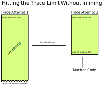

M1 support for PyPy
The PyPy team is happy to announce that we can now target the macOS ARM64
platform. Much of the work was executed by Maciej Fijałkowski (fijal) and
funded via a generous contribution to our OpenCollective. The work is based
on our existing support for aarch64 (arm64 on linux) with some twists
to support the differences between the CPUs and the operating system. There
are nightly builds for pypy3.8 and pypy3.9 (look for macos_arm64), and
the architecture will be part of our next release.
Please try it out and let us know how it is useful for you or how we could improve.
We still need help improving our macOS support. We have an open issue to help our packaging story. Help is welcome.
The PyPy team.
Implementing a Toy Optimizer
In this blog post I want to show the complete code (in Python3) of how a very simple optimizer for sequences of operations can work. These algorithms could be part of a (really simple) compiler, or a JIT. The architecture of the code in this blog post is very similar to that of the trace optimizer of the PyPy JIT: After a trace is produced, is is optimized before being sent to the machine code backend that produces binary instructions for the CPU architecture that PyPy is running on.
To get started, the first thing we need to do is define how our operations are stored. The format that a compiler uses to store the program while it is being optimized is usually called its intermediate representation (IR). Many production compilers use IRs that are in the Static Single-Assignment Form (SSA), and we will also use that. SSA form has the property that every variable is assigned to exactly once, and every variable is defined before it is used. This simplifies many things.
Let's make this concrete. If our input program is a complex expressions, such
as a * (b + 17) + (b + 17) the intermediate representation of that (or at
least its text representation) would maybe be something like:
var1 = add(b, 17) var2 = mul(a, var1) var3 = add(b, 17) var4 = add(var2, var3)
This sequence of instructions is inefficient. The operation add(b, 17) is
computed twice and we can save time by removing the second one and only
computing it once. In this post I want to show an optimizer that can do this
(and some related) optimizations.
Looking at the IR we notice that the input expression has been linearized into a sequence of operations, and all the intermedia results have been given unique variable names. The value that every variable is assigned is computed by the right hand side, which is some operation consisting of an operand and an arbitrary number of arguments. The arguments of an operation are either themselves variables or constants.
I will not at all talk about the process of translating the input program into the IR. Instead, I will assume we have some component that does this translation already. The tests in this blog post will construct small snippets of IR by hand. I also won't talk about what happens after the optimization (usually the optimized IR is translated into machine code).
Implementing the Intermediate Representation
Let's start modelling the intermediate representation with Python classes. First we define a base class of all values that can be used as arguments in operations, and let's also add a class that represents constants:
import pytest from typing import Optional, Any class Value: pass class Constant(Value): def __init__(self, value: Any): self.value = value def __repr__(self): return f"Constant({self.value})"
One consequence of the fact that every variable is assigned to only once is that variables are in a one-to-one correspondence with the right-hand-side of their unique assignments. That means that we don't need a class that represents variables at all. Instead, it's sufficient to have a class that represents an operation (the right-hand side), and that by definition is the same as the variable (left-hand side) that it defines:
class Operation(Value): def __init__(self, name: str, args: list[Value]): self.name = name self.args = args def __repr__(self): return f"Operation({self.name}, {self.args})" def arg(self, index: int): return self.args[index]
Now we can instantiate these two classes to represent the example sequence of operations above:
def test_construct_example(): # first we need something to represent # "a" and "b". In our limited view, we don't # know where they come from, so we will define # them with a pseudo-operation called "getarg" # which takes a number n as an argument and # returns the n-th input argument. The proper # SSA way to do this would be phi-nodes. a = Operation("getarg", [Constant(0)]) b = Operation("getarg", [Constant(1)]) # var1 = add(b, 17) var1 = Operation("add", [b, Constant(17)]) # var2 = mul(a, var1) var2 = Operation("mul", [a, var1]) # var3 = add(b, 17) var3 = Operation("add", [b, Constant(17)]) # var4 = add(var2, var3) var4 = Operation("add", [var2, var3]) sequence = [a, b, var1, var2, var3, var4] # nothing to test really, it shouldn't crash
Usually, complicated programs are represented as a control flow graph in a compiler, which represents all the possible paths that control can take while executing the program. Every node in the control flow graph is a basic block. A basic block is a linear sequence of operations with no control flow inside of it.
When optimizing a program, a compiler usually looks at the whole control flow graph of a function. However, that is still too complicated! So let's simplify further and look at only at optimizations we can do when looking at a single basic block and its sequence of instructions (they are called local optimizations).
Let's define a class representing basic blocks and let's also add some
convenience functions for constructing sequences of operations, because the
code in test_construct_example is a bit annoying.
class Block(list): def opbuilder(opname): def wraparg(arg): if not isinstance(arg, Value): arg = Constant(arg) return arg def build(self, *args): # construct an Operation, wrap the # arguments in Constants if necessary op = Operation(opname, [wraparg(arg) for arg in args]) # add it to self, the basic block self.append(op) return op return build # a bunch of operations we support add = opbuilder("add") mul = opbuilder("mul") getarg = opbuilder("getarg") dummy = opbuilder("dummy") lshift = opbuilder("lshift") def test_convencience_block_construction(): bb = Block() # a again with getarg, the following line # defines the Operation instance and # immediately adds it to the basic block bb a = bb.getarg(0) assert len(bb) == 1 assert bb[0].name == "getarg" # it's a Constant assert bb[0].args[0].value == 0 # b with getarg b = bb.getarg(1) # var1 = add(b, 17) var1 = bb.add(b, 17) # var2 = mul(a, var1) var2 = bb.mul(a, var1) # var3 = add(b, 17) var3 = bb.add(b, 17) # var4 = add(var2, var3) var4 = bb.add(var2, var3) assert len(bb) == 6
That's a good bit of infrastructure to make the tests easy to write. One
thing we are lacking though is a way to print the basic blocks into a nicely
readable textual representation. Because in the current form, the repr of a
Block is very annoying, the output of pretty-printing bb in the test above
looks like this:
[Operation('getarg', [Constant(0)]), Operation('getarg', [Constant(1)]), Operation('add', [Operation('getarg', [Constant(1)]), Constant(17)]), Operation('mul', [Operation('getarg', [Constant(0)]), Operation('add', [Operation('getarg', [Constant(1)]), Constant(17)])]), Operation('add', [Operation('getarg', [Constant(1)]), Constant(17)]), Operation('add', [Operation('mul', [Operation('getarg', [Constant(0)]), Operation('add', [Operation('getarg', [Constant(1)]), Constant(17)])]), Operation('add', [Operation('getarg', [Constant(1)]), Constant(17)])])]
It's impossible to see what is going on here, because the Operations in the
basic block appear several times, once as elements of the list but then also as
arguments to operations further down in the list. So we need some code that
turns things back into a readable textual representation, so we have a chance
to debug.
def bb_to_str(bb: Block, varprefix: str = "var"): # the implementation is not too important, # look at the test below to see what the # result looks like def arg_to_str(arg: Value): if isinstance(arg, Constant): return str(arg.value) else: # the key must exist, otherwise it's # not a valid SSA basic block: # the variable must be defined before # its first use return varnames[arg] varnames = {} res = [] for index, op in enumerate(bb): # give the operation a name used while # printing: var = f"{varprefix}{index}" varnames[op] = var arguments = ", ".join( arg_to_str(op.arg(i)) for i in range(len(op.args)) ) strop = f"{var} = {op.name}({arguments})" res.append(strop) return "\n".join(res) def test_basicblock_to_str(): bb = Block() var0 = bb.getarg(0) var1 = bb.add(5, 4) var2 = bb.add(var1, var0) assert bb_to_str(bb) == """\ var0 = getarg(0) var1 = add(5, 4) var2 = add(var1, var0)""" # with a different prefix for the invented # variable names: assert bb_to_str(bb, "x") == """\ x0 = getarg(0) x1 = add(5, 4) x2 = add(x1, x0)""" # and our running example: bb = Block() a = bb.getarg(0) b = bb.getarg(1) var1 = bb.add(b, 17) var2 = bb.mul(a, var1) var3 = bb.add(b, 17) var4 = bb.add(var2, var3) assert bb_to_str(bb, "v") == """\ v0 = getarg(0) v1 = getarg(1) v2 = add(v1, 17) v3 = mul(v0, v2) v4 = add(v1, 17) v5 = add(v3, v4)""" # Note the re-numbering of the variables! We # don't attach names to Operations at all, so # the printing will just number them in # sequence, can sometimes be a source of # confusion.
This is much better. Now we're done with the basic infrastructure, we can define sequences of operations and print them in a readable way. Next we need a central data structure that is used when actually optimizing basic blocks.
Storing Equivalences between Operations Using a Union-Find Data Structure
When optimizing a sequence of operations, we want to make it less costly to
execute. For that we typically want to remove operations (and sometimes
replace operations with less expensive ones). We can remove operations if
they do redundant computation, like case of the duplicate add(v1, 17) in
the example. So what we want to do is to turn the running input sequence:
v0 = getarg(0) v1 = getarg(1) v2 = add(v1, 17) v3 = mul(v0, v2) v4 = add(v1, 17) v5 = add(v3, v4)
Into the following optimized output sequence:
optvar0 = getarg(0) optvar1 = getarg(1) optvar2 = add(optvar1, 17) optvar3 = mul(optvar0, optvar2) optvar4 = add(optvar3, optvar2)
We left out the second add (which defines v4), and then replaced the
usage of v4 with v2 in the final operation that defines v5.
What we effectively did was discover that v2 and v4 are equivalent and then
replaced v4 with v2. In general, we might discover more such equivalences,
and we need a data structure to store them. A good data structure to store
these equivalences is Union Find (also called Disjoint-set data structure),
which stores a collection of disjoint sets. Disjoint means, that no operation
can appear in more than one set. The sets in our concrete case are the sets of
operations that compute the same result.
When we start out, every operation is in its own singleton set, with no other
member. As we discover more equivalences, we will unify sets into larger sets
of operations that all compute the same result. So one operation the data
structure supports is union, to unify two sets, we'll call that
make_equal_to in the code below.
The other operation the data structure supports is find, which takes an
operation and returns a "representative" of the set of all equivalent
operations. Two operations are in the same set, if the representative that
find returns for them is the same.
The exact details of how the data structure works are only sort of important
(even though it's very cool, I promise!). It's OK to skip over the
implementation. We will add the data structure right into our Value,
Constant and Operation classes:
class Value: def find(self): raise NotImplementedError("abstract") def _set_forwarded(self, value): raise NotImplementedError("abstract") class Operation(Value): def __init__(self, name: str, args: list[Value]): self.name = name self.args = args self.forwarded = None def __repr__(self): return ( f"Operation({self.name}," f"{self.args}, {self.forwarded})" ) def find(self) -> Value: # returns the "representative" value of # self, in the union-find sense op = self while isinstance(op, Operation): # could do path compression here too # but not essential next = op.forwarded if next is None: return op op = next return op def arg(self, index): # change to above: return the # representative of argument 'index' return self.args[index].find() def make_equal_to(self, value: Value): # this is "union" in the union-find sense, # but the direction is important! The # representative of the union of Operations # must be either a Constant or an operation # that we know for sure is not optimized # away. self.find()._set_forwarded(value) def _set_forwarded(self, value: Value): self.forwarded = value class Constant(Value): def __init__(self, value: Any): self.value = value def __repr__(self): return f"Constant({self.value})" def find(self): return self def _set_forwarded(self, value: Value): # if we found out that an Operation is # equal to a constant, it's a compiler bug # to find out that it's equal to another # constant assert isinstance(value, Constant) and \ value.value == self.value def test_union_find(): # construct three operation, and unify them # step by step bb = Block() a1 = bb.dummy(1) a2 = bb.dummy(2) a3 = bb.dummy(3) # at the beginning, every op is its own # representative, that means every # operation is in a singleton set # {a1} {a2} {a3} assert a1.find() is a1 assert a2.find() is a2 assert a3.find() is a3 # now we unify a2 and a1, then the sets are # {a1, a2} {a3} a2.make_equal_to(a1) # they both return a1 as the representative assert a1.find() is a1 assert a2.find() is a1 # a3 is still different assert a3.find() is a3 # now they are all in the same set {a1, a2, a3} a3.make_equal_to(a2) assert a1.find() is a1 assert a2.find() is a1 assert a3.find() is a1 # now they are still all the same, and we # also learned that they are the same as the # constant 6 # the single remaining set then is # {6, a1, a2, a3} c = Constant(6) a2.make_equal_to(c) assert a1.find() is c assert a2.find() is c assert a3.find() is c # union with the same constant again is fine a2.make_equal_to(c)
Constant Folding
Now comes the first actual optimization, a simple constant folding pass. It will remove operations where all the arguments are constants and replace them with the constant result.
Every pass has the same structure: we go over all operations in the basic
block in order and decide for each operation whether it can be removed. For the
constant folding pass, we can remove all the operations with constant
arguments (but we'll implement only the add case here).
I will show a buggy version of the constant folding pass first. It has a problem that is related to why we need the union-find data structure. We will fix it a bit further down.
def constfold_buggy(bb: Block) -> Block: opt_bb = Block() for op in bb: # basic idea: go over the list and do # constant folding of add where possible if op.name == "add": arg0 = op.args[0] arg1 = op.args[1] if isinstance(arg0, Constant) and \ isinstance(arg1, Constant): # can constant-fold! that means we # learned a new equality, namely # that op is equal to a specific # constant value = arg0.value + arg1.value op.make_equal_to(Constant(value)) # don't need to have the operation # in the optimized basic block continue # otherwise the operation is not # constant-foldable and we put into the # output list opt_bb.append(op) return opt_bb def test_constfold_simple(): bb = Block() var0 = bb.getarg(0) var1 = bb.add(5, 4) var2 = bb.add(var1, var0) opt_bb = constfold_buggy(bb) assert bb_to_str(opt_bb, "optvar") == """\ optvar0 = getarg(0) optvar1 = add(9, optvar0)""" @pytest.mark.xfail def test_constfold_buggy_limitation(): # this test fails! it shows the problem with # the above simple constfold_buggy pass bb = Block() var0 = bb.getarg(0) # this is folded var1 = bb.add(5, 4) # we want this folded too, but it doesn't work var2 = bb.add(var1, 10) var3 = bb.add(var2, var0) opt_bb = constfold_buggy(bb) assert bb_to_str(opt_bb, "optvar") == """\ optvar0 = getarg(0) optvar1 = add(19, optvar0)"""
Why does the test fail? The opt_bb printed output looks like this:
optvar0 = getarg(0) optvar1 = add(9, 10) optvar2 = add(optvar1, optvar0)
The problem is that when we optimize the second addition in constfold_buggy,
the argument of that operation is an Operation not a Constant, so
constant-folding is not applied to the second add. However, we have already
learned that the argument var1 to the operation var2 is equal to
Constant(9). This information is stored in the union-find data structure.
So what we are missing are suitable find calls in the constant folding pass, to
make use of the previously learned equalities.
Here's the fixed version:
def constfold(bb: Block) -> Block: opt_bb = Block() for op in bb: # basic idea: go over the list and do # constant folding of add where possible if op.name == "add": # >>> changed arg0 = op.arg(0) # uses .find() arg1 = op.arg(1) # uses .find() # <<< end changes if isinstance(arg0, Constant) and \ isinstance(arg1, Constant): # can constant-fold! that means we # learned a new equality, namely # that op is equal to a specific # constant value = arg0.value + arg1.value op.make_equal_to(Constant(value)) # don't need to have the operation # in the optimized basic block continue # otherwise the operation is not # constant-foldable and we put into the # output list opt_bb.append(op) return opt_bb def test_constfold_two_ops(): # now it works! bb = Block() var0 = bb.getarg(0) var1 = bb.add(5, 4) var2 = bb.add(var1, 10) var3 = bb.add(var2, var0) opt_bb = constfold(bb) assert bb_to_str(opt_bb, "optvar") == """\ optvar0 = getarg(0) optvar1 = add(19, optvar0)"""
Common Subexpression Elimination
The constfold pass only discovers equalities between Operations and
Constants. Let's do a second pass that also discovers equalities between
Operations and other Operations.
A simple optimization that does that has this property common subexpression elimination (CSE), which will finally optimize away the problem in the introductory example code that we had above.
def cse(bb: Block) -> Block: # structure is the same, loop over the input, # add some but not all operations to the # output opt_bb = Block() for op in bb: # only do CSE for add here, but it # generalizes if op.name == "add": arg0 = op.arg(0) arg1 = op.arg(1) # Check whether we have emitted the # same operation already prev_op = find_prev_add_op( arg0, arg1, opt_bb) if prev_op is not None: # if yes, we can optimize op away # and replace it with the earlier # result, which is an Operation # that was already emitted to # opt_bb op.make_equal_to(prev_op) continue opt_bb.append(op) return opt_bb def eq_value(val0, val1): if isinstance(val0, Constant) and \ isinstance(val1, Constant): # constants compare by their value return val0.value == val1.value # everything else by identity return val0 is val1 def find_prev_add_op(arg0: Value, arg1: Value, opt_bb: Block) -> Optional[Operation]: # Really naive and quadratic implementation. # What we do is walk over the already emitted # operations and see whether we emitted an add # with the current arguments already. A real # implementation might use a hashmap of some # kind, or at least only look at a limited # window of instructions. for opt_op in opt_bb: if opt_op.name != "add": continue # It's important to call arg here, # for the same reason why we # needed it in constfold: we need to # make sure .find() is called if eq_value(arg0, opt_op.arg(0)) and \ eq_value(arg1, opt_op.arg(1)): return opt_op return None def test_cse(): bb = Block() a = bb.getarg(0) b = bb.getarg(1) var1 = bb.add(b, 17) var2 = bb.mul(a, var1) var3 = bb.add(b, 17) var4 = bb.add(var2, var3) opt_bb = cse(bb) assert bb_to_str(opt_bb, "optvar") == """\ optvar0 = getarg(0) optvar1 = getarg(1) optvar2 = add(optvar1, 17) optvar3 = mul(optvar0, optvar2) optvar4 = add(optvar3, optvar2)"""
Strength Reduction
Now we have one pass that replaces Operations with Constants and one that
replaces Operations with previously existing Operations. Let's now do one
final pass that replaces Operations by newly invented Operations, a simple
strength reduction. This one will be simple.
def strength_reduce(bb: Block) -> Block: opt_bb = Block() for op in bb: if op.name == "add": arg0 = op.arg(0) arg1 = op.arg(1) if arg0 is arg1: # x + x turns into x << 1 newop = opt_bb.lshift(arg0, 1) op.make_equal_to(newop) continue opt_bb.append(op) return opt_bb def test_strength_reduce(): bb = Block() var0 = bb.getarg(0) var1 = bb.add(var0, var0) opt_bb = strength_reduce(bb) assert bb_to_str(opt_bb, "optvar") == """\ optvar0 = getarg(0) optvar1 = lshift(optvar0, 1)"""
Putting Things Together
Let's combine the passes into one single pass, so that we are going over all the operations only exactly once, instead of having to look at every operation once for all the different passes.
def optimize(bb: Block) -> Block: opt_bb = Block() for op in bb: if op.name == "add": arg0 = op.arg(0) arg1 = op.arg(1) # constant folding if isinstance(arg0, Constant) and \ isinstance(arg1, Constant): value = arg0.value + arg1.value op.make_equal_to(Constant(value)) continue # cse prev_op = find_prev_add_op( arg0, arg1, opt_bb) if prev_op is not None: op.make_equal_to(prev_op) continue # strength reduce: # x + x turns into x << 1 if arg0 is arg1: newop = opt_bb.lshift(arg0, 1) op.make_equal_to(newop) continue # and while we are at it, let's do some # arithmetic simplification: # a + 0 => a if eq_value(arg0, Constant(0)): op.make_equal_to(arg1) continue if eq_value(arg1, Constant(0)): op.make_equal_to(arg0) continue opt_bb.append(op) return opt_bb def test_single_pass(): bb = Block() # constant folding var0 = bb.getarg(0) var1 = bb.add(5, 4) var2 = bb.add(var1, 10) var3 = bb.add(var2, var0) opt_bb = optimize(bb) assert bb_to_str(opt_bb, "optvar") == """\ optvar0 = getarg(0) optvar1 = add(19, optvar0)""" # cse + strength reduction bb = Block() var0 = bb.getarg(0) var1 = bb.getarg(1) var2 = bb.add(var0, var1) var3 = bb.add(var0, var1) # the same as var3 var4 = bb.add(var2, 2) var5 = bb.add(var3, 2) # the same as var4 var6 = bb.add(var4, var5) opt_bb = optimize(bb) assert bb_to_str(opt_bb, "optvar") == """\ optvar0 = getarg(0) optvar1 = getarg(1) optvar2 = add(optvar0, optvar1) optvar3 = add(optvar2, 2) optvar4 = lshift(optvar3, 1)""" # removing + 0 bb = Block() var0 = bb.getarg(0) var1 = bb.add(16, -16) var2 = bb.add(var0, var1) var3 = bb.add(0, var2) var4 = bb.add(var2, var3) opt_bb = optimize(bb) assert bb_to_str(opt_bb, "optvar") == """\ optvar0 = getarg(0) optvar1 = lshift(optvar0, 1)"""
Conclusion
That's it for now. Why is this architecture cool? From a software engineering
point of view, sticking everything into a single function like in optimize
above is obviously not great, and if you wanted to do this for real you would
try to split the cases into different functions that are individually
digestible, or even use a DSL that makes the pattern matching much more
readable. But the advantage of the architecture is that it's quite efficient,
it makes it possible to pack a lot of good optimizations into a single pass
over a basic block.
Of course this works even better if you are in a tracing context, where everything is put into a trace, which is basically one incredibly long basic block. In a JIT context it's also quite important that the optimizer itself runs quickly.
Various other optimizations are possible in this model. There is a follow-up post that show how to implement what is arguably PyPy's most important optimization.
Some Further Pointers
This post is only a short introduction and is taking some shortcuts, I wanted to also give some (non-exhaustive) pointers to more general literature about the touched topics.
The approach to CSE described here is usually can be seen as value numbering, it's normally really implemented with a hashmap though. Here's a paper that describes various styles of implementing that, even beyond a single basic block. The paper also partly takes the perspective of discovering equivalence classes of operations that compute the same result.
A technique that leans even more fully into finding equivalences between operations is using e-graphs and then applying equality saturation (this is significantly more advanced that what I described here though). A cool modern project that applies this technique is egg.
If you squint a bit, you can generally view a constant folding pass as a very simple form of Partial Evaluation: every operation that has constant arguments is constant-folded away, and the remaining ones are "residualized", i.e. put into the output program. This point of view is not super important for the current post, but will become important in the next one.
Acknowledgements: Thanks to Thorsten Ball for getting me to write this and for his enthusiastic feedback. I also got great feedback from Max Bernstein, Matti Picus and Per Vognsen. A conversation with Peng Wu that we had many many years ago and that stuck with me made me keep thinking about various ways to view compiler optimizations.
How is PyPy Tested?
How is PyPy Tested?
In this post I want to give an overview of how the PyPy project does and thinks about testing. PyPy takes testing quite seriously and has done some from the start of the project. Here I want to present the different styles of tests that PyPy has, when we use them and how I think about them.
Background
To make the blog post self-contained, I am going to start with a small overview about PyPy's architecture. If you already know what PyPy is and how it works, you can skip this section.
PyPy means "Python in Python". It is an alternative implementation of the Python language. Usually, when we speak of "Python", we can mean two different things. On the one hand it means "Python as an abstract programming language". On the other hand, the main implementation of that language is also often called "Python". To more clearly distinguish the two, the implementation is often also called "CPython", because it is an interpreter implemented in C code.
Now we can make the statement "PyPy is Python in Python" more precise: PyPy is an interpreter for Python 3.9, implemented in RPython. RPython ("Restricted Python") is a subset of Python 2, which is statically typed (using type inference, not type annotations) and can be compiled to C code. That means we can take our Python 3.9 interpreter, and compile it into a C binary that can run Python 3.9 code. The final binary behaves pretty similarly to CPython.
The main thing that makes PyPy interesting is that during the translation of our interpreter to C, a number of components are automatically inserted into the final binary. One component is a reasonably good garbage collector.
The more exciting component that is inserted into the binary is a just-in-time compiler. The insertion of this component is not fully automatic, instead it is guided by a small number of annotations in the source code of the interpreter. The effect of inserting this JIT compiler into the binary is that the resulting binary can run Python code significantly faster than CPython, in many cases. How this works is not important for the rest of the post, if you want to see an example of concretely doing that to a small interpreter you can look at this video.
PyPy Testing History
A few historical notes on the PyPy project and its relationship to testing: The PyPy project was started in 2004. At the time when the project was started, Extreme Programming and Agile Software Development were up and coming. On the methodology side, PyPy was heavily influenced by these, and started using Test-Driven Development and pair programming right from the start.
Also technologically, PyPy has been influential on testing in the Python world.
Originally, PyPy had used the unittest testing framework, but pretty soon
the developers got frustrated with it. Holger Krekel, one of the original
developers who started PyPy, started the pytest testing framework soon
afterwards.
Interpreter-Level Tests
So, how are tests for PyPy written, concretely? The tests for the interpreter
are split into two different kinds, which we call "interpreter level tests" and
"application level tests". The former are tests that can be used to test the
objects and functions that are used in the implementation of the Python
interpreter. Since the interpreter is written in Python 2, those tests are also
written in Python 2, using pytest. They tend to be more on the unit test side of
things. They are in files with the pattern test_*.py.
Here is an example that tests the implementation of integers (very slightly simplified):
class TestW_IntObject: ... def test_hash(self): w_x = W_IntObject(42) w_result = w_x.descr_hash(self.space) assert isinstance(w_result, W_IntObject) assert w_result.intval == 42
This test checks that if you take an object that represents integers in the
Python language (using the class W_IntObject, a "wrapped integer object")
with the value 42, computing the hash of that object returns another instance of
the same class, also with the value 42.
These tests can be run on top of any Python 2 implementation, either CPython or
PyPy. We can then test and debug the internals of the PyPy interpreter using
familiar tools like indeed pytest and the Python debuggers. They can be run,
because all the involved code like the tests and the class W_IntObject are
just completely regular Python 2 classes that behave in the regular way when
run on top of a Python interpreter.
In CPython, these tests don't really have an equivalent. They would correspond to tests that are written in C and that can test the logic of all the C functions of CPython that execute certain functionality, accessing the internals of C structs in the process. ¹
Application-Level Tests
There is also a second class of tests for the interpreter. Those are tests that
don't run on the level of the implementation. Instead, they are executed by
the PyPy Python interpreter, thus running on the level of the applications run
by PyPy. Since the interpreter is running Python 3, the tests are also written
in Python 3. They are stored in files with the pattern apptest_*.py and
look like "regular" Python 3 tests. ²
Here's an example of how you could write a test equivalent to the one above:
This style of test looks more "natural" and is the preferred one in cases where the test does not need to access the internals of the logic or the objects of the interpreter.
Application level tests can be run in two different ways. On the one hand, we can simply run them on CPython 3. This is very useful! Since we want PyPy to behave like CPython, running the tests that we write on CPython is useful to make sure that the tests themselves aren't wrong.
On the other hand, the main way to run these tests is on top of PyPy, itself running on top of a Python 2 implementation. This makes it possible to run the test without first bootstrapping PyPy to C. Since bootstrapping to C is a relatively slow operation (can take up to an hour) it is crucially important to be able to run tests without bootstrapping first. It also again makes it possible to debug crashes in the interpreter using the regular Python 2 debugger. Of course running tests in this way is unfortunately itself not super fast, given that they run on a stack of two different interpreters.
Application-level tests correspond quite closely to CPython's tests suite (which is using the unittest framework). Of course in CPython it is not possible to run the test suite without building the CPython binary using a C compiler. ³
So when do we write application-level tests, and when interpreter-level tests?
Interpreter-level tests are necessary to test internal data structures that
touch data and logic that is not directly exposed to the Python language. If
that is not necessary, we try to write application-level tests. App-level tests
are however by their nature always more on the integration test side of things.
To be able to run the test_hash function above, many parts of PyPy need to
work correctly, the parser, the bytecode compiler, the bytecode interpreter, the
hash builtin, calling the __hash__ special method, etc, etc.
This observation is also true for CPython! One could argue that CPython has no unit tests at all, because in order to be able to even run the tests, most of Python needs to be in working order already, so all the tests are really implicitly integration tests.
The CPython Test Suite
We also use the CPython Test suite as a final check to see whether our
interpreter correctly implements all the features of the Python language. In
that sense it acts as some kind of compliance test suite that checks whether we
implement the language correctly. The test suite is not perfect for this.
Since it is written for CPython's purposes during its development, a
lot of the tests check really specific CPython implementation details. Examples
for these are tests that check that __del__ is called immediately after
objects go out of scope (which only happens if you use reference counting as a
garbage collection strategy, PyPy uses a different approach to garbage
collection). Other examples are checking
for exception error messages very explicitly. However, the CPython test suite
has gotten a lot better in these regards over time, by adding
support.gc_collect() calls to fix the former problem, and by marking some
very specific tests with the @impl_detail decorator. Thanks to all the
CPython developers who have worked on this!
In the process of re-implementing CPython's functionality and running CPython's tests suite, PyPy can often also be a good way to find bugs in CPython. While we think about the corner cases of some Python feature we occasionally find situations where CPython didn't get everything completely correct either, which we then report back.
Testing for Performance Regressions
All the tests we described so far are checking behaviour. But one of PyPy's important goals is to be a fast implementation not "just" a correct one. Some aspects of performance can be tested by regular unit tests, either application- or interpreter-level. In order to check whether some performance shortcut is taken in the interpreter, we sometimes can write tests that monkeypatch the slow default implementation to always error. Then, if the fast path is taken properly, that slow default implementation is never reached.
But we also have additional tests that test the correct interaction with the JIT explicitly. For that, we have a special style of test that checks that the JIT will produce the correct machine code for a small snippet of Python code. To make this kind of test somewhat more robust, we don't check the machine code directly, but instead the architecture independent intermediate representation that the JIT uses to produce machine code from.
As an example, here is a small test that loading the attribute of a constant global instance can be completely constant folded away:
def test_load_attr(self): src = ''' class A(object): pass a = A() a.x = 1 def main(n): i = 0 while i < n: i = i + a.x return i ''' log = self.run(src, [1000]) assert log.result == 1000 loop, = log.loops_by_filename(self.filepath) assert loop.match(""" i9 = int_lt(i5, i6) guard_true(i9, descr=...) guard_not_invalidated(descr=...) i10 = int_add(i5, 1) --TICK-- jump(..., descr=...) """)
The string passed to the loop.match function is a string representation of
the intermediate representation code that is generated for the while loop in
the main function given in the source. The important part of that
intermediate representation is that the i = i + a.x addition is optimized
into an int_add(x, 1) operation. The second argument for the addition is the
constant 1, because the JIT noted that the global a is a constant, and
the attribute x of that instance is always 1. The test thus checks that
this optimization still works.
Those tests are again more on the unit test side of things (and can thus unfortunately be a bit brittle sometimes and break). The integration test equivalent for performance is the PyPy Speed Center which tracks the performance of micro- and macro-benchmarks over time and lets us see when big performance regressions are happening. The speed center is not really an automatic test and does not produce pass/fail outcomes. Instead, it requires human judgement and intervention in order to interpret the performance changes. Having a real pass/fail mechanism is something that would be great to have but is probably quite tricky in practice.
Conclusion
This concludes my overview of some of the different styles of tests that we use to develop the PyPy Python interpreter.
There is a whole other set of tests for the development of the RPython language, the garbage collectors it provides as well as the code that does the automatic JIT insertion, maybe I'll cover these in a future post.
Footnotes
¹ CPython has the _testcapimodule.c and related modules, that are used to
unit-test the C-API. However, these are still driven from Python tests using
the unittest framework and wouldn't run without the Python interpreter
already working.
² There is also a deprecated different way to write these tests, by putting
them in the test_*.py files that interpreter level tests are using and
then having a test class with the pattern class AppTest*. We haven't
converted all of them to the new style yet, even though the old style is
quite weird: since the test_*.py files are themselves parsed by
Python 2, the tests methods in AppTest* classes need to be written in the
subset of Python 3 syntax that is also valid Python 2 syntax, leading to a lot
of confusion.
³ Nit-picky side-note: C interpreters are a thing! But not that widely used in practice, or only in very specific situations.
PyPy v7.3.9 security release
PyPy v7.3.9 security release
The PyPy team is proud to release version 7.3.9 of PyPy. This is a security
release to match the recent CPython release and updates the portable pypy
tarballs with bzip2 1.0.8, openssl1.1.1n, and libexpat 2.4.7. Along
the way this release fixes some issues discovered after the 7.3.8 release and
updates sqlite3 to 3.38.2. It includes:
PyPy2.7, which is an interpreter supporting the syntax and the features of Python 2.7 including the stdlib for CPython 2.7.18+ (the
+is for backported security updates)PyPy3.7, which is an interpreter supporting the syntax and the features of Python 3.7, including the stdlib for CPython 3.7.13. This will be the last release of PyPy3.7.
PyPy3.8, which is an interpreter supporting the syntax and the features of Python 3.8, including the stdlib for CPython 3.8.13.
PyPy3.9, which is an interpreter supporting the syntax and the features of Python 3.9, including the stdlib for CPython 3.9.12. We relate to this as "beta" quality. We welcome testing of this version, if you discover incompatibilities, please report them so we can gain confidence in the version.
The interpreters are based on much the same codebase, thus the multiple release. This is a micro release, all APIs are compatible with the other 7.3 releases. Highlights of the release, since the release of 7.3.8 in February 2022, include:
Fixed some failing stdlib tests on PyPy3.9
Update the bundled libexpat to 2.4.6 and sqlite3 to 3.38.2
We recommend updating. You can find links to download the v7.3.9 releases here:
We would like to thank our donors for the continued support of the PyPy project. If PyPy is not quite good enough for your needs, we are available for direct consulting work. If PyPy is helping you out, we would love to hear about it and encourage submissions to our blog via a pull request to https://github.com/pypy/pypy.org
We would also like to thank our contributors and encourage new people to join the project. PyPy has many layers and we need help with all of them: PyPy and RPython documentation improvements, tweaking popular modules to run on PyPy, or general help with making RPython's JIT even better. Since the 7.3.7 release, we have accepted contributions from 6 new contributors, thanks for pitching in, and welcome to the project!
If you are a python library maintainer and use C-extensions, please consider making a HPy / CFFI / cppyy version of your library that would be performant on PyPy. In any case both cibuildwheel and the multibuild system support building wheels for PyPy.
What is PyPy?
PyPy is a Python interpreter, a drop-in replacement for CPython 2.7, 3.7, 3.8 and 3.9. It's fast (PyPy and CPython 3.7.4 performance comparison) due to its integrated tracing JIT compiler.
We also welcome developers of other dynamic languages to see what RPython can do for them.
This PyPy release supports:
x86 machines on most common operating systems (Linux 32/64 bits, Mac OS X 64 bits, Windows 64 bits, OpenBSD, FreeBSD)
64-bit ARM machines running Linux. A shoutout to Huawei for sponsoring the VM running the tests.
s390x running Linux
big- and little-endian variants of PPC64 running Linux,
PyPy support Windows 32-bit, PPC64 big- and little-endian, and ARM 32 bit, but does not release binaries. Please reach out to us if you wish to sponsor releases for those platforms.
Known Issues with PyPy3.9
We slightly modified the concurrent future's
ProcessExcecutorPoolto start all the worker processes when the first task is received (like on Python3.8) to avoid an apparent race condition when usingforkand threads (issue 3650).
What else is new?
For more information about the 7.3.9 release, see the full changelog.
Please update, and continue to help us make PyPy better.
Cheers, The PyPy team
PyPy v7.3.8: release of python 2.7, 3.7, 3.8, and 3.9
PyPy v7.3.8: release of python 2.7, 3.7, 3.8, and 3.9-beta
The PyPy team is proud to release version 7.3.8 of PyPy. It has been only a few months since our last release, but we have some nice speedups and bugfixes we wish to share. The release includes four different interpreters:
PyPy2.7, which is an interpreter supporting the syntax and the features of Python 2.7 including the stdlib for CPython 2.7.18+ (the
+is for backported security updates)PyPy3.7, which is an interpreter supporting the syntax and the features of Python 3.7, including the stdlib for CPython 3.7.12. This will be the last release of PyPy3.7.
PyPy3.8, which is an interpreter supporting the syntax and the features of Python 3.8, including the stdlib for CPython 3.8.12. This is our third release of this interpreter, and we are removing the "beta" tag.
PyPy3.9, which is an interpreter supporting the syntax and the features of Python 3.9, including the stdlib for CPython 3.9.10. As this is our first release of this interpreter, we relate to this as "beta" quality. We welcome testing of this version, if you discover incompatibilities, please report them so we can gain confidence in the version.
The interpreters are based on much the same codebase, thus the multiple release. This is a micro release, all APIs are compatible with the other 7.3 releases. Highlights of the release, since the release of 7.3.7 in late October 2021, include:
PyPy3.9 uses an RPython version of the PEG parser which brought with it a cleanup of the lexer and parser in general
Fixed a regression in PyPy3.8 when JITting empty list comprehensions
Tweaked some issues around changing the file layout after packaging to make the on-disk layout of PyPy3.8 more compatible with CPython. This requires
setuptools>=58.1.0RPython now allows the target executable to have a
.in its name, so PyPy3.9 will produce apypy3.9-candlibpypy3.9-c.so. Changing the name of the shared object to be version-specific (it used to belibpypy3-c.so) will allow it to live alongside other versions.Building PyPy3.9+ accepts a
--platlibdirargument like CPython.Improvement in ssl's use of CFFI buffers to speed up
recvandrecvintoUpdate the packaged OpenSSL to 1.1.1m
We recommend updating. You can find links to download the v7.3.8 releases here:
We would like to thank our donors for the continued support of the PyPy project. If PyPy is not quite good enough for your needs, we are available for direct consulting work. If PyPy is helping you out, we would love to hear about it and encourage submissions to our blog via a pull request to https://github.com/pypy/pypy.org
We would also like to thank our contributors and encourage new people to join the project. PyPy has many layers and we need help with all of them: PyPy and RPython documentation improvements, tweaking popular modules to run on PyPy, or general help with making RPython's JIT even better. Since the previous release, we have accepted contributions from 6 new contributors, thanks for pitching in, and welcome to the project!
If you are a python library maintainer and use C-extensions, please consider making a HPy / CFFI / cppyy version of your library that would be performant on PyPy. In any case both cibuildwheel and the multibuild system support building wheels for PyPy.
What is PyPy?
PyPy is a Python interpreter, a drop-in replacement for CPython 2.7, 3.7, 3.8 and 3.9. It's fast (PyPy and CPython 3.7.4 performance comparison) due to its integrated tracing JIT compiler.
We also welcome developers of other dynamic languages to see what RPython can do for them.
This PyPy release supports:
x86 machines on most common operating systems (Linux 32/64 bits, Mac OS X 64 bits, Windows 64 bits, OpenBSD, FreeBSD)
64-bit ARM machines running Linux. A shoutout to Huawei for sponsoring the VM running the tests.
s390x running Linux
big- and little-endian variants of PPC64 running Linux,
PyPy support Windows 32-bit, PPC64 big- and little-endian, and ARM 32 bit, but does not release binaries. Please reach out to us if you wish to sponsor releases for those platforms.
Known Issues with PyPy3.9
There is still a known speed regression around
**kwargshandlingWe slightly modified the concurrent future's
ProcessExcecutorPoolto start all the worker processes when the first task is received (like on Python3.8) to avoid an apparent race condition when usingforkand threads (issue 3650).
What else is new?
For more information about the 7.3.8 release, see the full changelog.
Please update, and continue to help us make PyPy better.
Cheers, The PyPy team
Natural Language Processing for Icelandic with PyPy: A Case Study
Natural Language Processing for Icelandic with PyPy: A Case Study
Icelandic is one of the smallest languages of the world, with about 370.000 speakers. It is a language in the Germanic family, most similar to Norwegian, Danish and Swedish, but closer to the original Old Norse spoken throughout Scandinavia until about the 14th century CE.
As with other small languages, there are worries that the language may not survive in a digital world, where all kinds of fancy applications are developed first - and perhaps only - for the major languages. Voice assistants, chatbots, spelling and grammar checking utilities, machine translation, etc., are increasingly becoming staples of our personal and professional lives, but if they don’t exist for Icelandic, Icelanders will gravitate towards English or other languages where such tools are readily available.
Iceland is a technology-savvy country, with world-leading adoption rates of the Internet, PCs and smart devices, and a thriving software industry. So the government figured that it would be worthwhile to fund a 5-year plan to build natural language processing (NLP) resources and other infrastructure for the Icelandic language. The project focuses on collecting data and developing open source software for a range of core applications, such as tokenization, vocabulary lookup, n-gram statistics, part-of-speech tagging, named entity recognition, spelling and grammar checking, neural language models and speech processing.
My name is Vilhjálmur Þorsteinsson, and I’m the founder and CEO of a software startup Miðeind in Reykjavík, Iceland, that employs 10 software engineers and linguists and focuses on NLP and AI for the Icelandic language. The company participates in the government’s language technology program, and has contributed significantly to the program’s core tools (e.g., a tokenizer and a parser), spelling and grammar checking modules, and a neural machine translation stack.
When it came to a choice of programming languages and development tools for the government program, the requirements were for a major, well supported, vendor-and-OS-agnostic FOSS platform with a large and diverse community, including in the NLP space. The decision to select Python as a foundational language for the project was a relatively easy one. That said, there was a bit of trepidation around the well known fact that CPython can be slow for inner-core tasks, such as tokenization and parsing, that can see heavy workloads in production.
I first became aware of PyPy in early 2016 when I was developing a crossword game Netskrafl in Python 2.7 for Google App Engine. I had a utility program that compressed a dictionary into a Directed Acyclic Word Graph and was taking 160 seconds to run on CPython 2.7, so I tried PyPy and to my amazement saw a 4x speedup (down to 38 seconds), with literally no effort besides downloading the PyPy runtime.
This led me to select PyPy as the default Python interpreter for my company’s Python development efforts as well as for our production websites and API servers, a role in which it remains to this day. We have followed PyPy’s upgrades along the way, being just about to migrate our minimally required language version from 3.6 to 3.7.
In NLP, speed and memory requirements can be quite important for software usability. On the other hand, NLP logic and algorithms are often complex and challenging to program, so programmer productivity and code clarity are also critical success factors. A pragmatic approach balances these factors, avoids premature optimization and seeks a careful compromise between maximal run-time efficiency and minimal programming and maintenance effort.
Turning to our use cases, our Icelandic text tokenizer "Tokenizer" is fairly light, runs tight loops and performs a large number of small, repetitive operations. It runs very well on PyPy’s JIT and has not required further optimization.
Our Icelandic parser Greynir (known on PyPI as reynir) is, if I may say so myself, a piece of work. It parses natural language text according to a hand-written context-free grammar, using an Earley-type algorithm as enhanced by Scott and Johnstone. The CFG contains almost 7,000 nonterminals and 6,000 terminals, and the parser handles ambiguity as well as left, right and middle recursion. It returns a packed parse forest for each input sentence, which is then pruned by a scoring heuristic down to a single best result tree.
This parser was originally coded in pure Python and turned out to be unusably slow when run on CPython - but usable on PyPy, where it was 3-4x faster. However, when we started applying it to heavier production workloads, it became apparent that it needed to be faster still. We then proceeded to convert the innermost Earley parsing loop from Python to tight C++ and to call it from PyPy via CFFI, with callbacks for token-terminal matching functions (“business logic”) that remained on the Python side. This made the parser much faster (on the order of 100x faster than the original on CPython) and quick enough for our production use cases. Even after moving much of the heavy processing to C++ and using CFFI, PyPy still gives a significant speed boost over CPython.
Connecting C++ code with PyPy proved to be quite painless using CFFI, although we had to figure out a few magic incantations in our build module to make it compile smoothly during setup from source on Windows and MacOS in addition to Linux. Of course, we build binary PyPy and CPython wheels for the most common targets so most users don’t have to worry about setup requirements.
With the positive experience from the parser project, we proceeded to take a similar approach for two other core NLP packages: our compressed vocabulary package BinPackage (known on PyPI as islenska) and our trigrams database package Icegrams. These packages both take large text input (3.1 million word forms with inflection data in the vocabulary case; 100 million tokens in the trigrams case) and compress it into packed binary structures. These structures are then memory-mapped at run-time using mmap and queried via Python functions with a lookup time in the microseconds range. The low-level data structure navigation is done in C++, called from Python via CFFI. The ex-ante preparation, packing, bit-fiddling and data structure generation is fast enough with PyPy, so we haven’t seen a need to optimize that part further.
To showcase our tools, we host public (and open source) websites such as greynir.is for our parsing, named entity recognition and query stack and yfirlestur.is for our spell and grammar checking stack. The server code on these sites is all Python running on PyPy using Flask, wrapped in gunicorn and hosted on nginx. The underlying database is PostgreSQL accessed via SQLAlchemy and psycopg2cffi. This setup has served us well for 6 years and counting, being fast, reliable and having helpful and supporting communities.
As can be inferred from the above, we are avid fans of PyPy and commensurately thankful for the great work by the PyPy team over the years. PyPy has enabled us to use Python for a larger part of our toolset than CPython alone would have supported, and its smooth integration with C/C++ through CFFI has helped us attain a better tradeoff between performance and programmer productivity in our projects. We wish for PyPy a great and bright future and also look forward to exciting related developments on the horizon, such as HPy.
Error Message Style Guides of Various Languages
Error Message Style Guides of Various Languages
PyPy has been trying to produce good SyntaxErrors and other errors for a long time. CPython has also made an enormous push to improve its SyntaxErrors in the last few releases. These improvements are great, but the process feels somewhat arbitrary sometimes. To see what other languages are doing, I asked people on Twitter whether they know of error message style guides for other programming languages.
Wonderfully, people answered me with lots of helpful links (full list at the end of the post), thank you everybody! All those sources are very interesting and contain many great points, I recommend reading them directly! In this post, I'll try to summarize some common themes or topics that I thought were particularly interesting.
Language Use
Almost all guides stress the need for plain and simple English, as well as conciseness and clarity [Flix, Racket, Rust, Flow]. Flow suggests to put coding effort into making the grammar correct, for example in the case of plurals or to distinguish between "a" and "an".
The suggested tone should be friendly and neutral, the messages should not blame the Programmer [Flow]. Rust and Flix suggest to not use the term 'illegal' and use something like 'invalid' instead.
Flow suggests to avoid "compiler speak". For example terms like 'token' and 'identifier' should be avoided and terms that are more familiar to programmers be used (eg "name" is better). The Racket guide goes further and has a list of allowed technical terms and some prohibited terms.
Structure
Several guides (such as Flix and Flow) point out a 80/20 rule: 80% of the times an error message is read, the developer knows that message well and knows exactly what to do. For this use case it's important that the message is short. On the other hand, 20% of the times this same message will have to be understood by a developer who has never seen it before and is confused, and so the message needs to contain enough information to allow them to find out what is going on. So the error message needs to strike a balance between brevity and clarity.
The Racket guide proposes to use the following general structure for errors: 'State the constraint that was violated ("expected a"), followed by what was found instead.'
The Rust guides says to avoid "Did you mean?" and questions in general, and wants the compiler to instead be explicit about why something was suggested. The example the Rust guide gives is: 'Compare "did you mean: Foo" vs. "there is a struct with a similar name: Foo".' Racket goes further and forbids suggestions altogether because "Students will follow well‐meaning‐but‐wrong advice uncritically, if only because they have no reason to doubt the authoritative voice of the tool."
Formatting and Source Positions
The Rust guide suggests to put all identifiers into backticks (like in Markdown), Flow formats the error messages using full Markdown.
The Clang, Flow and Rust guides point out the importance of using precise source code spans to point to errors, which is especially important if the compiler information is used in the context of an IDE to show a red squiggly underline or some other highlighting. The spans should be as small as possible to point out the source of the error [Flow].
Conclusion
I am quite impressed how advanced and well-thought out the approaches are. I wonder whether it would makes sense for Python to adopt a (probably minimal, to get started) subset of these ideas as guidelines for its own errors.
Sources
Rust: https://rustc-dev-guide.rust-lang.org/diagnostics.html
Racket: https://cs.brown.edu/~kfisler/Misc/error-msg-guidelines-racket-studlangs.pdf
More about the research that lead to the Racket guidelines (including the referenced papers): https://twitter.com/ShriramKMurthi/status/1451688982761381892
Flow: https://calebmer.com/2019/07/01/writing-good-compiler-error-messages.html
Elm's error message catalog: https://github.com/elm/error-message-catalog
Reason: https://reasonml.github.io/blog/2017/08/25/way-nicer-error-messages.html
PyPy v7.3.7: bugfix release of python 3.7 and 3.8
PyPy v7.3.7: bug-fix release of 3.7, 3.8
We are releasing a PyPy 7.3.7 to fix the recent 7.3.6 release's binary
incompatibility with the previous 7.3.x releases. We mistakenly added fields
to PyFrameObject and PyDateTime_CAPI that broke the promise of binary
compatibility, which means that c-extension wheels compiled for 7.3.5 will not
work with 7.3.6 and via-versa. Please do not use 7.3.6.
We have added a cursory test for binary API breakage to the https://github.com/pypy/binary-testing repo which hopefully will prevent such mistakes in the future.
Additionally, a few smaller bugs were fixed:
Use
uintfor therequestargument offcntl.ioctl(issue 3568)Fix incorrect tracing of while True` body in 3.8 (issue 3577)
Properly close resources when using a
concurrent.futures.ProcessPool(issue 3317)Fix the value of
LIBDIRin_sysconfigdatain 3.8 (issue 3582)
You can find links to download the v7.3.7 releases here:
We would like to thank our donors for the continued support of the PyPy project. If PyPy is not quite good enough for your needs, we are available for direct consulting work. If PyPy is helping you out, we would love to hear about it and encourage submissions to our blog site via a pull request to https://github.com/pypy/pypy.org
We would also like to thank our contributors and encourage new people to join the project. PyPy has many layers and we need help with all of them: PyPy and RPython documentation improvements, tweaking popular modules to run on PyPy, or general help with making RPython's JIT even better.
If you are a python library maintainer and use C-extensions, please consider making a CFFI / cppyy version of your library that would be performant on PyPy. In any case both cibuildwheel and the multibuild system support building wheels for PyPy.
What is PyPy?
PyPy is a Python interpreter, a drop-in replacement for CPython 2.7, 3.7, and 3.8. It's fast (PyPy and CPython 3.7.4 performance comparison) due to its integrated tracing JIT compiler.
We also welcome developers of other dynamic languages to see what RPython can do for them.
This PyPy release supports:
x86 machines on most common operating systems (Linux 32/64 bits, Mac OS X 64 bits, Windows 64 bits, OpenBSD, FreeBSD)
64-bit ARM machines running Linux.
s390x running Linux
PyPy does support ARM 32 bit and PPC64 processors, but does not release binaries.
PyPy v7.3.6: release of python 2.7, 3.7, and 3.8
PyPy v7.3.6: release of python 2.7, 3.7, and 3.8-beta
The PyPy team is proud to release version 7.3.6 of PyPy, which includes three different interpreters:
PyPy2.7, which is an interpreter supporting the syntax and the features of Python 2.7 including the stdlib for CPython 2.7.18+ (the
+is for backported security updates)PyPy3.7, which is an interpreter supporting the syntax and the features of Python 3.7, including the stdlib for CPython 3.7.12.
PyPy3.8, which is an interpreter supporting the syntax and the features of Python 3.8, including the stdlib for CPython 3.8.12. Since this is our first release of the interpreter, we relate to this as "beta" quality. We welcome testing of this version, if you discover incompatibilites, please report them so we can gain confidence in the version.
The interpreters are based on much the same codebase, thus the multiple release. This is a micro release, all APIs are compatible with the other 7.3 releases. Highlights of the release, since the release of 7.3.5 in May 2021, include:
We have merged a backend for HPy, the better C-API interface. The backend implements HPy version 0.0.3.
Translation of PyPy into a binary, known to be slow, is now about 40% faster. On a modern machine, PyPy3.8 can translate in about 20 minutes.
PyPy Windows 64 is now available on conda-forge, along with nearly 700 commonly used binary packages. This new offering joins the more than 1000 conda packages for PyPy on Linux and macOS. Many thanks to the conda-forge maintainers for pushing this forward over the past 18 months.
Speed improvements were made to
io,sum,_ssland more. These were done in response to user feedback.The 3.8 version of the release contains a beta-quality improvement to the JIT to better support compiling huge Python functions by breaking them up into smaller pieces.
The release of Python3.8 required a concerted effort. We were greatly helped by @isidentical (Batuhan Taskaya) and other new contributors.
The 3.8 package now uses the same layout as CPython, and many of the PyPy-specific changes to
sysconfig,distutils.sysconfig, anddistutils.commands.install.pyhave been removed. Thestdlibnow is located in<base>/lib/pypy3.8onposixsystems, and in<base>/Libon Windows. The include files on windows remain the same. Onposixthey are in<base>/include/pypy3.8. Note we still use thepypyprefix to prevent mixing the files with CPython (which usespython.
We recommend updating. You can find links to download the v7.3.6 releases here:
We would like to thank our donors for the continued support of the PyPy project. If PyPy is not quite good enough for your needs, we are available for direct consulting work. If PyPy is helping you out, we would love to hear about it and encourage submissions to our blog via a pull request to https://github.com/pypy/pypy.org
We would also like to thank our contributors and encourage new people to join the project. PyPy has many layers and we need help with all of them: PyPy and RPython documentation improvements, tweaking popular modules to run on PyPy, or general help with making RPython's JIT even better. Since the previous release, we have accepted contributions from 7 new contributors, thanks for pitching in, and welcome to the project!
If you are a python library maintainer and use C-extensions, please consider making a CFFI / cppyy version of your library that would be performant on PyPy. In any case both cibuildwheel and the multibuild system support building wheels for PyPy.
What is PyPy?
PyPy is a Python interpreter, a drop-in replacement for CPython 2.7, 3.7, and soon 3.8. It's fast (PyPy and CPython 3.7.4 performance comparison) due to its integrated tracing JIT compiler.
We also welcome developers of other dynamic languages to see what RPython can do for them.
This PyPy release supports:
x86 machines on most common operating systems (Linux 32/64 bits, Mac OS X 64 bits, Windows 64 bits, OpenBSD, FreeBSD)
big- and little-endian variants of PPC64 running Linux,
s390x running Linux
64-bit ARM machines running Linux.
PyPy does support Windows 32-bit and ARM 32 bit processors, but does not release binaries. Please reach out to us if you wish to sponsor releases for those platforms.
What else is new?
For more information about the 7.3.6 release, see the full changelog.
Please update, and continue to help us make PyPy better.
Cheers, The PyPy team
Better JIT Support for Auto-Generated Python Code
Performance Cliffs
A common bad property of many different JIT compilers is that of a "performance cliff": A seemingly reasonable code change, leading to massively reduced performance due to hitting some weird property of the JIT compiler that's not easy to understand for the programmer (e.g. here's a blog post about the fix of a performance cliff when running React on V8). Hitting a performance cliff as a programmer can be intensely frustrating and turn people off from using PyPy altogether. Recently we've been working on trying to remove some of PyPy's performance cliffs, and this post describes one such effort.
The problem showed up in an issue where somebody found the performance of their website using Tornado a lot worse than what various benchmarks suggested. It took some careful digging to figure out what caused the problem: The slow performance was caused by the huge functions that the Tornado templating engine creates. These functions lead the JIT to behave in unproductive ways. In this blog post I'll describe why the problem occurs and how we fixed it.
Problem
After quite a bit of debugging we narrowed down the problem to the following reproducer: If you render a big HTML template (example) using the Tornado templating engine, the template rendering is really not any faster than CPython. A small template doesn't show this behavior, and other parts of Tornado seem to perform well. So we looked into how the templating engine works, and it turns out that the templates are compiled into Python functions. This means that a big template can turn into a really enormous Python function (Python version of the example). For some reason really enormous Python functions aren't handled particularly well by the JIT, and in the next section I'll explain some the background that's necessary to understand why this happens.
Trace Limits and Inlining
To understand why the problem occurs, it's necessary to understand how PyPy's trace limit and inlining works. The tracing JIT has a maximum trace length built in, the reason for that is some limitation in the compact encoding of traces in the JIT. Another reason is that we don't want to generate arbitrary large chunks of machine code. Usually, when we hit the trace limit, it is due to inlining. While tracing, the JIT will inline many of the functions called from the outermost one. This is usually good and improves performance greatly, however, inlining can also lead to the trace being too long. If that happens, we will mark a called function as uninlinable. The next time we trace the outer function we won't inline it, leading to a shorter trace, which hopefully fits the trace limit.

In the diagram above we trace a function f, which calls a function g, which
is inlined into the trace. The trace ends up being too long, so the JIT
disables inlining of g. The next time we try to trace f the trace will
contain a call to g instead of inlining it. The trace ends up being not too
long, so we can turn it into machine code when tracing finishes.
Now we know enough to understand what the problem with automatically generated code is: sometimes, the outermost function itself doesn't fit the trace limit, without any inlining going on at all. This is usually not the case for normal, hand-written Python functions. However, it can happen for automatically generated Python code, such as the code that the Tornado templating engine produces.
So, what happens when the JIT hits such a huge function? The function is traced until the trace is too long. Then the trace limits stops further tracing. Since nothing was inlined, we cannot make the trace shorter the next time by disabling inlining. Therefore, this happens again and again, the next time we trace the function we run into exactly the same problem. The net effect is that the function is even slowed down: we spend time tracing it, then stop tracing and throw the trace away. Therefore, that effort is never useful, so the resulting execution can be slower than not using the JIT at all!
Solution
To get out of the endless cycle of useless retracing we first had the idea of simply disabling all code generation for such huge functions, that produce too long traces even if there is no inlining at all. However, that lead to disappointing performance in the example Tornado program, because important parts of the code remain always interpreted.
Instead, our solution is now as follows: After we have hit the trace limit and no inlining has happened so far, we mark the outermost function as a source of huge traces. The next time we trace such a function, we do so in a special mode. In that mode, hitting the trace limit behaves differently: Instead of stopping the tracer and throwing away the trace produced so far, we will use the unfinished trace to produce machine code. This trace corresponds to the first part of the function, but stops at a basically arbitrary point in the middle of the function.
The question is what should happen when execution reaches the end of this unfinished trace. We want to be able to cover more of the function with machine code and therefore need to extend the trace from that point on. But we don't want to do that too eagerly to prevent lots and lots of machine code being generated. To achieve this behaviour we add a guard to the end of the unfinished trace, which will always fail. This has the right behaviour: a failing guard will transfer control to the interpreter, but if it fails often enough, we can patch it to jump to more machine code, that starts from this position. In that way, we can slowly explore the full gigantic function and add all those parts of the control flow graph that are actually commonly executed at runtime.

In the diagram we are trying to trace a huge function f, which leads to
hitting the trace limit. However, nothing was inlined into the trace, so
disabling inlining won't ensure a successful trace attempt the next time.
Instead, we mark f as "huge". This has the effect that when we trace it again
and are about to hit the trace limit, we end the trace at an arbitrary point by
inserting a guard that always fails.

If this guard failure is executed often enough, we might patch the guard and
add a jump to a further part of the function f. This can continue potentially
several times, until the trace really hits and end points (for example by
closing the loop and jumping back to trace 1, or by returning from f).
Evaluation
Since this is a performance cliff that we didn't observe in any of our benchmarks ourselves, it's pointless to look at the effect that this improvement has on existing benchmarks – there shouldn't and indeed there isn't any.
Instead, we are going to look at a micro-benchmark that came out of the original bug report, one that simply renders a big artificial Tornado template 200 times. The code of the micro-benchmark can be found here.
All benchmarks were run 10 times in new processes. The means and standard deviations of the benchmark runs are:
| Implementation | Time taken (lower is better) |
|---|---|
| CPython 3.9.5 | 14.19 ± 0.35s |
| PyPy3 without JIT | 59.48 ± 5.41s |
| PyPy3 JIT old | 14.47 ± 0.35s |
| PyPy3 JIT new | 4.89 ± 0.10s |
What we can see is that while the old JIT is very helpful for this micro-benchmark, it only brings the performance up to CPython levels, not providing any extra benefit. The new JIT gives an almost 3x speedup.
Another interesting number we can look at is how often the JIT started a trace, and for how many traces we produced actual machine code:
| Implementation | Traces Started | Traces sent to backend | Time spent in JIT |
|---|---|---|---|
| PyPy3 JIT old | 216 | 24 | 0.65s |
| PyPy3 JIT new | 30 | 25 | 0.06s |
Here we can clearly see the problem: The old JIT would try tracing the auto-generated templating code again and again, but would never actually produce any machine code, wasting lots of time in the process. The new JIT still traces a few times uselessly, but then eventually converges and stops emitting machine code for all the paths through the auto-generated Python code.
Related Work
Tim Felgentreff pointed me to the fact that Truffle also has a mechanism to slice huge methods into smaller compilation units (and I am sure other JITs have such mechanisms as well).
Conclusion
In this post we've described a performance cliff in PyPy's JIT, that of really big auto-generated functions which hit the trace limit without inlining, that we still want to generate machine code for. We achieve this by chunking up the trace into several smaller traces, which we compile piece by piece. This is not a super common thing to be happening – otherwise we would have run into and fixed it earlier – but it's still good to have a fix now.
The work described in this post tiny bit experimental still, but we will release it as part of the upcoming 3.8 beta release, to get some more experience with it. Please grab a 3.8 release candidate, try it out and let us know your observations, good and bad!